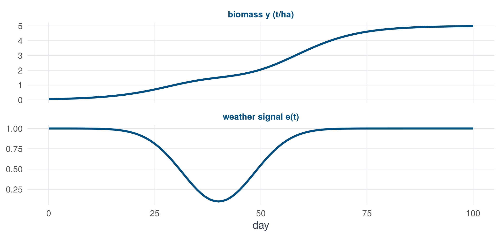

r <- 0.12; K <- 5; alpha <- 0.8 # growth rate, ceiling, stress sensitivity
n <- 100; day <- 0:n
e <- 1 - 0.9 * exp(-((day - 40) / 12)^2) # weather signal: stress around day 40
S <- 1 - alpha * (1 - e) # growth modulator
y <- numeric(n + 1); y[1] <- 0.05
for (t in 1:n) y[t + 1] <- y[t] + r * y[t] * (1 - y[t] / K) * S[t]1 · The idea
A model of change is a running total of daily growth
A crop as a running total
Think of the biomass of a crop as a bank balance. Every day some growth is added, and how much is added depends on today’s balance (a bigger plant intercepts more light) and on today’s weather. Written as a rule for the daily change:
\[ y_{t+1} = y_t + \underbrace{f(y_t, u_t)}_{\text{growth today}} \]
This is a difference equation, and its continuous cousin is the ordinary differential equation (ODE) \(\mathrm{d}y/\mathrm{d}t = f(y, u)\). Crop models such as APSIM do exactly this, day by day. The whole question of the workshop is: what is \(f\)?
A toy crop
Let growth be logistic (fast when small, slowing near a ceiling \(K\)) and let a stress period in the weather reduce it:
\[ \frac{\mathrm{d}y}{\mathrm{d}t} = r\,y\left(1 - \frac{y}{K}\right) S(t), \qquad S(t) = 1 - \alpha\,(1 - e(t)) \]
Here \(e(t)\) is a weather signal that dips during a stress event, and \(\alpha\) is the sensitivity to it. We simulate one season with a daily step:

The crop slows down when the stress hits and recovers afterwards, so the curve has a shoulder.
The trick: a rate equation is a regression
Suppose we did not know \(f\). We would observe \(y\) and \(e\) every day, and we would compute the daily increments \(z_t = y_{t+1} - y_t\). If we guess that \(f\) is a combination of simple candidate functions (a library),
\[ z_t \approx \sum_{j} \xi_j\, \theta_j(y_t, e_t), \]
then the unknown coefficients \(\xi_j\) enter linearly. This is an ordinary linear regression. Our library is every product of \(y\) and \(e\) up to second power:
library_toy <- function(y, e) cbind(y = y, `y^2` = y^2, e = e, `e^2` = e^2,
`y*e` = y * e, `y^2*e` = y^2 * e, `y*e^2` = y * e^2, `y^2*e^2` = y^2 * e^2)
X <- library_toy(y[-(n + 1)], e[-(n + 1)]) # library on days 0 .. n-1
z <- diff(y) # daily increments
fit <- lm(z ~ X - 1) # no intercept: no constant in the libraryExpanding the true equation gives the exact coefficients we should find: only \(y\), \(y^2\), \(y\,e\) and \(y^2 e\) appear, and the four terms that do not belong are zero.
truth <- c(r * (1 - alpha), -r * (1 - alpha) / K, 0, 0, r * alpha, -r * alpha / K, 0, 0)
fitted <- setNames(coef(fit), colnames(X))
round(rbind(truth = truth, fitted = fitted), 5) y y^2 e e^2 y*e y^2*e y*e^2 y^2*e^2
truth 0.024 -0.0048 0 0 0.096 -0.0192 0 0
fitted 0.024 -0.0048 0 0 0.096 -0.0192 0 0
NoteIdea
The regression found the equation exactly: four true terms recovered, four zero terms recovered as zero. Learning an ODE from data is just a linear regression of daily increments on a library of candidate functions. Everything else in this workshop (sparsity, genotypes, validation) builds on this one step.
Make it break: add noise
Real measurements are noisy. A small error in \(y\) becomes a large error in the increment \(z_t = y_{t+1} - y_t\) (a difference of two noisy numbers), and the library terms are strongly correlated, so ordinary least squares struggles.
set.seed(1)
yn <- y + rnorm(n + 1, sd = 0.01) # 0.01 t/ha of measurement noise
Xn <- library_toy(yn[-(n + 1)], e[-(n + 1)]); zn <- diff(yn)
ols <- setNames(coef(lm(zn ~ Xn - 1)), colnames(Xn))A sparse fit keeps only the few terms that matter. Here is the simplest version, which repeatedly refits and removes the smallest coefficient until four terms are left (fit_ssr is defined in step 4):
A <- crossprod(Xn) / n # the regression, as normal equations
b <- as.numeric(crossprod(Xn, zn)) / n
sparse <- setNames(fit_ssr(A, b, k = 4)$coef, colnames(Xn))round(rbind(truth = truth, `ols (noisy)` = ols, `sparse, 4 terms` = sparse), 3) y y^2 e e^2 y*e y^2*e y*e^2 y^2*e^2
truth 0.024 -0.005 0.000 0.000 0.096 -0.019 0.000 0.000
ols (noisy) 0.030 -0.009 -0.024 0.024 0.116 -0.020 -0.025 0.004
sparse, 4 terms 0.017 0.000 0.001 0.000 0.101 -0.024 0.000 0.000OLS spreads weight over all eight terms, including some that are truly zero. The sparse fit keeps three of the four true terms (\(y\), \(y\,e\), \(y^2 e\)) and swaps the fourth (\(y^2\)) for a term that does not belong (\(e\), with a tiny coefficient). It is much closer to the truth than OLS, but not perfect. With three times more noise (sd = 0.03) even the sparse fit loses the structure: a model needs enough signal.
ImportantPitfall
Noise in the state is amplified by differencing. With only 8–13 observations per season (typical for field trials) you should integrate the equation over each interval instead of differencing, which is what the research code does for field data. Here the data are simulated daily, so differencing is fine.
CautionSwap
Try changing sd = 0.01 to 0.005 or 0.02, or the number of terms k to 3 or 6. How many terms survive? At what noise level does the structure disappear?
What comes next
In the real problem the “state” is biomass, the “weather” is four measured drivers (thermal time, day length, water availability and radiation), and there are 199 genotypes. The next page looks at those data.